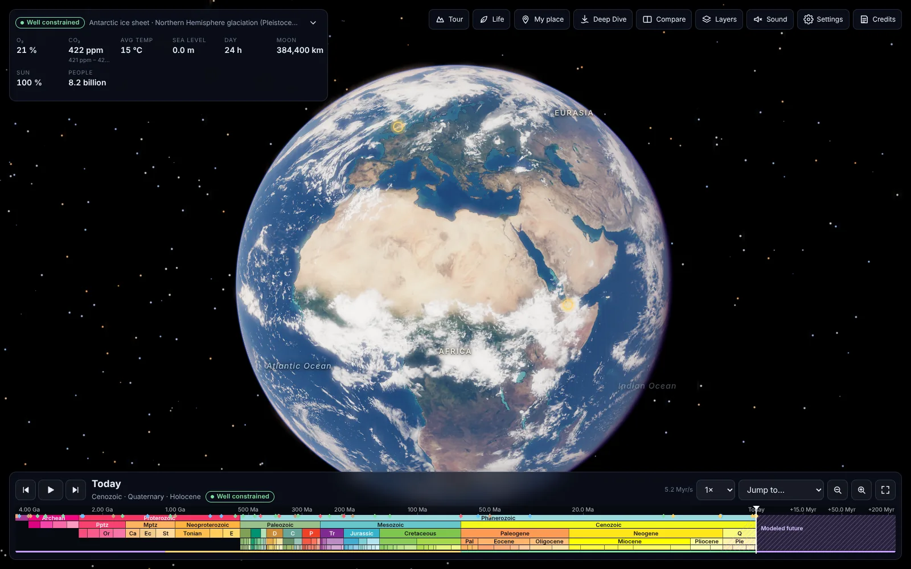

Open the globe ↗4,567 million years ago → 250 million years ahead
Earth Through Time
An interactive 3D globe of the whole history of the planet. Drag the timeline and watch continents drift, oceans open and ice sheets come and go.
Open Earth Through Time
Needs WebGL2 · best on a laptop
The maps come from published plate reconstructions, so the coastlines at each age follow the science. Each moment is labelled as well constrained, modelled or speculative, so you can tell evidence from estimate.
Things to try
- Press Tour for “The story of Earth” in 16 narrated stops, or “The human journey” in 12.
- Open My place, pick Mumbai or any city, and follow it as its plate moves back through time.
- Use Compare to put Pangaea and today side by side with a sliding divider.
- Take a Deep Dive to the ground and walk, fly or swim among animals of that era.
- 170
- world maps: every 5 million years back to 540 million years ago, wider steps beyond
- 59
- events on the timeline, from the Moon-forming impact to today
- 101
- species with fact cards, from the Burgess Shale to the blue whale
- 28
- guided tour stops across the two narrated tours
- Hadean4,567–4,031 Ma
- Archean4,031–2,500 Ma
- Proterozoic2,500–539 Ma
- Phanerozoic539 Ma–today
Earth’s eons to scale, in the official chart colours the app uses. 95 of the app’s 101 species first appear in the last one.